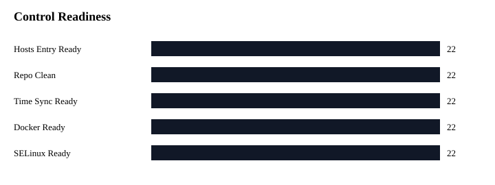

| inventory_hostname | ansible_host | service_name | exception_type | owner_team | risk_level | approval_status | reason | review_cycle | notes |
|---|---|---|---|---|---|---|---|---|---|
| af-gitlab-01 | 10.44.30.11 | gitlab-server | FIREWALLD_DOCKER_DESIGN | Digital Infrastructure Engineering | Medium | Accepted for demo baseline | Docker-based GitLab and GitLab Runner require SOC-approved Docker/firewalld design before enabling host firewalld. | Quarterly | Synthetic public-safe exception record |
| af-gitlab-runner-01 | 10.44.30.12 | gitlab-runner | FIREWALLD_DOCKER_DESIGN | Digital Infrastructure Engineering | Medium | Accepted for demo baseline | Docker-based GitLab and GitLab Runner require SOC-approved Docker/firewalld design before enabling host firewalld. | Quarterly | Synthetic public-safe exception record |
| inventory_hostname | ansible_host | service_name | real_hostname | os | version | scope | hub_hosts_entry | git_hosts_entry | package_manager | external_repo_refs | time_service | time_sync | chrony_source | selinux | firewalld | firewall_control | docker | final_status | notes |
|---|---|---|---|---|---|---|---|---|---|---|---|---|---|---|---|---|---|---|---|
| af-api-gw-out-01 | 10.44.20.11 | api-gateway-outbound | af-api-gw-out-01.atlasforge.example | Rocky | 9.4 | Application | yes | yes | dnf | 0 | chronyd | yes | ntp01.atlasforge.example | Enforcing | active | OK | active | OK | All baseline controls passed in synthetic evidence set |
| af-api-gw-out-02 | 10.44.20.12 | api-gateway-outbound | af-api-gw-out-02.atlasforge.example | Rocky | 9.4 | Application | yes | yes | dnf | 0 | chronyd | yes | ntp01.atlasforge.example | Enforcing | active | OK | active | OK | All baseline controls passed in synthetic evidence set |
| af-api-gw-out-03 | 10.44.20.13 | api-gateway-outbound | af-api-gw-out-03.atlasforge.example | Rocky | 9.4 | Application | yes | yes | dnf | 0 | chronyd | yes | ntp01.atlasforge.example | Enforcing | active | OK | active | OK | All baseline controls passed in synthetic evidence set |
| af-api-gw-in-01 | 10.44.20.21 | api-gateway-inbound | af-api-gw-in-01.atlasforge.example | Rocky | 9.4 | Application | yes | yes | dnf | 0 | chronyd | yes | ntp01.atlasforge.example | Enforcing | active | OK | active | OK | All baseline controls passed in synthetic evidence set |
| af-api-gw-in-02 | 10.44.20.22 | api-gateway-inbound | af-api-gw-in-02.atlasforge.example | Rocky | 9.4 | Application | yes | yes | dnf | 0 | chronyd | yes | ntp01.atlasforge.example | Enforcing | active | OK | active | OK | All baseline controls passed in synthetic evidence set |
| af-api-gw-in-03 | 10.44.20.23 | api-gateway-inbound | af-api-gw-in-03.atlasforge.example | Rocky | 9.4 | Application | yes | yes | dnf | 0 | chronyd | yes | ntp01.atlasforge.example | Enforcing | active | OK | active | OK | All baseline controls passed in synthetic evidence set |
| af-app-dev-01 | 10.44.20.31 | application-dev | af-app-dev-01.atlasforge.example | Rocky | 9.4 | Application | yes | yes | dnf | 0 | chronyd | yes | ntp01.atlasforge.example | Enforcing | active | OK | active | OK | All baseline controls passed in synthetic evidence set |
| af-app-stg-01 | 10.44.20.32 | application-staging | af-app-stg-01.atlasforge.example | Rocky | 9.4 | Application | yes | yes | dnf | 0 | chronyd | yes | ntp01.atlasforge.example | Enforcing | active | OK | active | OK | All baseline controls passed in synthetic evidence set |
| af-app-prd-01 | 10.44.20.33 | application-production | af-app-prd-01.atlasforge.example | Rocky | 9.4 | Application | yes | yes | dnf | 0 | chronyd | yes | ntp01.atlasforge.example | Enforcing | active | OK | active | OK | All baseline controls passed in synthetic evidence set |
| af-gitlab-01 | 10.44.30.11 | gitlab-server | af-gitlab-01.atlasforge.example | Rocky | 9.4 | Platform | yes | yes | dnf | 0 | chronyd | yes | ntp01.atlasforge.example | Enforcing | inactive | ACCEPTED_EXCEPTION | active | OK | SOC-approved operational exception documented for Docker/firewalld design review |